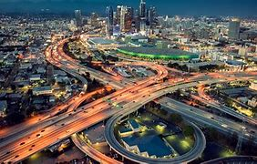
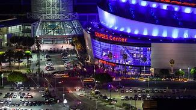

Los Angeles
Los Angeles (US: /lɔːs ˈændʒələs/ (About this soundlisten) lawss AN-jəl-əs;[a] Tongva: Tovaangar;[14][15] Spanish: Los Ángeles; Spanish for "The Angels"), often spoken and written as its initialism, L.A., is the largest city in California. With a 2020 population of 3,898,747,[10] it is the second-largest city in the United States, after New York City, and the third-largest city in North America, after Mexico City and New York City. Los Angeles is known for its Mediterranean climate, ethnic and cultural diversity, Hollywood entertainment industry, and its sprawling metropolitan area.
Los Angeles lies in a basin in Southern California, adjacent to the Pacific Ocean, with mountains as high as 10,000 feet (3,000 m), and deserts. The city, which covers about 469 square miles (1,210 km2),[7] is the seat of Los Angeles County, the most populous county in the United States. The Los Angeles metropolitan area (MSA) is home to a population of 13.1 million, making it the second-largest metropolitan area in the nation after that of New York.[11] Greater Los Angeles includes metro Los Angeles as well as the Inland Empire and Ventura County.[16] It is the second-most populous U.S. combined statistical area, also after New York, with a 2015 estimate of 18.7 million people.[17]
Home to the Chumash and Tongva, the area that became Los Angeles was claimed by Juan Rodríguez Cabrillo for Spain in 1542. The city was founded on September 4, 1781, under Spanish governor Felipe de Neve, on the village of Yaanga.[18] It became a part of Mexico in 1821 following the Mexican War of Independence. In 1848, at the end of the Mexican–American War, Los Angeles and the rest of California were purchased as part of the Treaty of Guadalupe Hidalgo, and thus became part of the United States. Los Angeles was incorporated as a municipality on April 4, 1850, five months before California achieved statehood. The discovery of oil in the 1890s brought rapid growth to the city.[19] The city was further expanded with the completion of the Los Angeles Aqueduct in 1913, which delivers water from Eastern California.
Los Angeles has a diverse and robust economy, and hosts businesses in a broad range of professional and cultural fields. It also has the busiest container port in the Americas.[20] In 2018, the Los Angeles metropolitan area had a gross metropolitan product of over $1.0 trillion,[21] making it the city with the third-largest GDP in the world, after Tokyo and New York City. Los Angeles hosted the 1932 and 1984 Summer Olympics and will host the 2028 Summer Olympics.
Topography
The city of Los Angeles covers a total area of 502.7 square miles (1,302 km2), comprising 468.7 square miles (1,214 km2) of land and 34.0 square miles (88 km2) of water.[65] The city extends for 44 miles (71 km) north-south and for 29 miles (47 km) east-west. The perimeter of the city is 342 miles (550 km).
Los Angeles is both flat and hilly. The highest point in the city proper is Mount Lukens at 5,074 ft (1,547 m),[66][67] located at the northeastern end of the San Fernando Valley. The eastern end of the Santa Monica Mountains stretches from Downtown to the Pacific Ocean and separates the Los Angeles Basin from the San Fernando Valley. Other hilly parts of Los Angeles include the Mt. Washington area north of Downtown, eastern parts such as Boyle Heights, the Crenshaw district around the Baldwin Hills, and the San Pedro district.
Surrounding the city are much higher mountains. Immediately to the north lie the San Gabriel Mountains, which is a popular recreation area for Angelenos. Its high point is Mount San Antonio, locally known as Mount Baldy, which reaches 10,064 feet (3,068 m). Further afield, the highest point in the Greater Los Angeles area is San Gorgonio Mountain, with a height of 11,503 feet (3,506 m).
The Los Angeles River, which is largely seasonal, is the primary drainage channel. It was straightened and lined in 51 miles (82 km) of concrete by the Army Corps of Engineers to act as a flood control channel.[68] The river begins in the Canoga Park district of the city, flows east from the San Fernando Valley along the north edge of the Santa Monica Mountains, and turns south through the city center, flowing to its mouth in the Port of Long Beach at the Pacific Ocean. The smaller Ballona Creek flows into the Santa Monica Bay at Playa del Rey.
Take A Look On What Tourist Say About The City Of Angels
"“Travel makes one modest. You see what a tiny place you occupy in the world.”"
“See the world. It's more fantastic than any dream made or paid for in factories. Ask for no guarantees, ask for no security.”
“See the los angeles. It's more fantastic than any dream made or paid for in factories. Ask for no guarantees, ask for no security.”
“I can't think of anything that excites a greater sense of childlike wonder than to be in a country where you are ignorant of almost everything.”
“The journey to the city of angels is the destination.”
Take A Look On The City Of Angels

